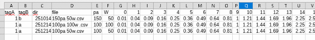

前提
・前提：Python３系がインストールされていること（3.13.1で動作確認）。
必要パッケージ
PySide6
pip install PySide6 でインストールしてください.
必要ファイル
同じフォルダに置いてください。
EDTA_main.pyw
parameter_table.py
sub_print_csv.py(サブプロセスのサンプル用)
動作確認用データ
testdataフォルダ
3フォルダあり、251114にはファイルまとめの対象外の*.noファイルがあります。

起動
1. EDTA_main.pywをダブルクリックすると起動します。
2. testdataフォルダで、"set root”を押下します。testdataフォルダを解析のrootにします。

3. testdataフォルダで、“new json”を押して今回のデータタグのjsonファイル名(**.json)をつけます。masterのファル名も聞かれるので、別の名前(++.json)をつけます。
4. keyに条件名（装置名など）、value listに取りうる値を",”区切りで入力します。valueで、comboboxでvalue listの値の中から値を選択します。root フォルダで設定した値は、以下のフォルダのデフォルトの値になります。

5. ”save JSON”で保存します。
(すでに作成したaa.jsonとmas.json(master)もあるので、”load root JSON”で使う事もできます。)
6. 以下のフォルダ251214などでもvalueの値を変更し、"save json”を押下します。デフォルト値を使うフォルダの場合、値の編集と"save json”は必要ありません。
7. データ処理対象から外したいフォルダは、”make no-analysis tag”を押せば、**.noファイルが生成されて、データ処理対象外になります。”delete no-analysis tag”を押せば、"**.no”は削除されます。

8. "set sub*.py”でsub_print_csv.pyを指定します。これがそれぞれのフォルダで実行されるpythonファイルになります。skip header は1にします(sub_print_csv.pyのheaderは1行のため)。
ここでは不要ですが、単体動作は、run_sub_print.batを実行すると確認できます。
9. “set result filename”でまとめcsvの名前をつけます。
10. “run sub *.py”を押下します。これでtestdata以下の全フォルダにsub_print_csv.pyが実行されます。
aa.jsonをそのまま使っていると、以下のcsvが生成されます。
